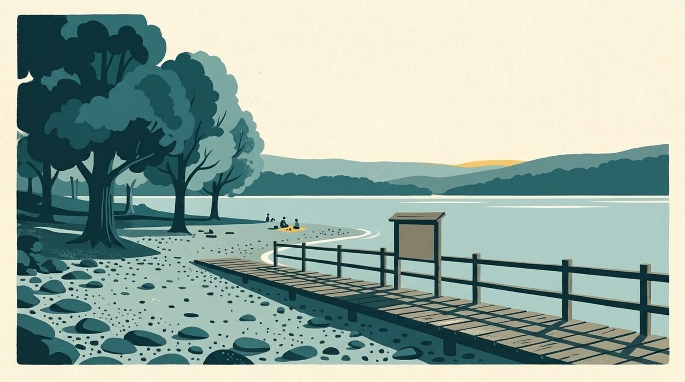
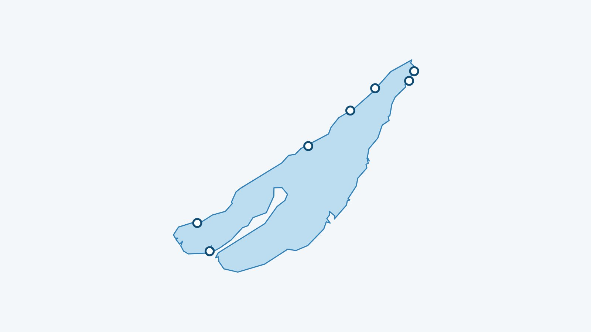

In breve
Il mio lago mostra la temperatura dell’acqua del lago di Bienne a 70 cm sotto la superficie, aggiornata ogni tre ore dal modello Alplakes dell’Eawag. Il modello è tridimensionale: il valore è letto davanti a ciascuna delle 7 spiagge seguite e può quindi variare dall’una all’altra.
Il 25 novembre 2026, al mattino, l’acqua andava da 9,8 °C a 10,5 °C secondo la spiaggia (70 cm sotto la superficie, modello Alplakes).
Da dove viene la temperatura del lago di Bienne?
I dati provengono da Alplakes, la piattaforma dell’Eawag (l’istituto di ricerca sull’acqua del settore dei politecnici federali). Combina modelli numerici dei laghi e dati satellitari per calcolare la temperatura dell’acqua a diverse profondità. I dati sono pubblicati con licenza CC BY 4.0 e Il mio lago li rilegge ogni tre ore.
Per questo lago Alplakes fa girare un modello tridimensionale. Il mio lago legge il valore a 70 cm di profondità, nel punto del modello davanti a ogni spiaggia. Il dato di precisione pubblicato dall’Eawag, un errore di circa 1 °C in superficie per i grandi laghi (EGU 2026), riguarda il suo modello unidimensionale (Simstrat), non questo modello 3D, la cui precisione non vi è quantificata.
La temperatura è la stessa su tutte le spiagge?
No. Il vento sposta l’acqua di superficie e le baie poco profonde si scaldano o si raffreddano più in fretta del largo: nello stesso giorno due spiagge possono mostrare valori diversi. Lo scarto del momento è calcolato più sotto. Il meccanismo è spiegato, con esempi misurati, nel nostro articolo sulla temperatura del Lemano.
Perché 70 cm sotto la superficie?
Perché è più o meno l’acqua in cui si nuota. Il primissimo strato cambia molto in fretta con il sole e l’aria; poco più sotto il valore è più stabile e più vicino a ciò che si sente entrando.
Le 7 spiagge seguite
Ogni spiaggia ha la sua pagina, con acqua, vento e un giudizio per il bagno e il paddle.

Noleggio sul lago di Bienne
Ogni scheda rimanda al sito del gestore, quando esiste. Orari e prezzi cambiano: da confermare con lui.
- Saunaboot Biel, Bienne (Vingelz), vicino a Bienne – Plage: Barca-sauna sul lago di Bienne, gestita da Joran-Biel (Neuenburgstrasse 72, fermata del bus Räblus Vingelz).
- meetmyboat, Nidau, vicino a Nidau: Noleggio di barche e stand-up paddle dal porticciolo di Bienne, a Nidau; paddle da 25 franchi l’ora secondo il sito.
- Neptun AG, Bienne, vicino a Bienne – Plage: Noleggio di barche dal 1877; aperto con bel tempo, dalle 11 alle 19.
- Biel-Boot, Bienne, vicino a Bienne – Plage: Noleggio di barche a motore al porticciolo di Bienne.
- Faul Erlach AG, Erlach, vicino a Cerlier (Erlach): Barche a noleggio a Cerlier, o la popolare «BBQ-Donut», una grande ciambella galleggiante con barbecue.
Saune sul lago di Bienne
- Saunafloss Erlach, Erlach, vicino a Cerlier (Erlach): Zattere-sauna a legna ormeggiate all’imbarcadero di Erlach sul lago di Bienne: poi dritti nel lago. Su prenotazione.
- Värmekoja, Sutz-Lattrigen, vicino a Nidau: Sauna finlandese privata al campeggio di Sutz (Strandweg), sul lago di Bienne, fino a 6 persone: aperta dal 5 ottobre 2026, tutti i giorni 7–22, da 35 franchi l’ora indipendentemente dal numero di persone, prenotazione online.
Dove vedere la temperatura del lago di Bienne in diretta?
Mese per mese
In media l’acqua supera i 20 °C da luglio a agosto.
| Mese | Media | Giorno più freddo | Giorno più caldo |
|---|---|---|---|
| gennaio | 6.0 °C | 4.8 °C | 7.8 °C |
| febbraio | 5.4 °C | 4.7 °C | 6.5 °C |
| marzo | 6.7 °C | 4.9 °C | 9.0 °C |
| aprile | 9.6 °C | 7.1 °C | 14.1 °C |
| maggio | 14.1 °C | 11.4 °C | 18.4 °C |
| giugno | 19.1 °C | 14.9 °C | 24.7 °C |
| luglio | 21.5 °C | 17.4 °C | 24.9 °C |
| agosto | 21.8 °C | 18.6 °C | 24.5 °C |
| settembre | 19.4 °C | 15.0 °C | 23.1 °C |
| ottobre | 15.0 °C | 11.5 °C | 19.6 °C |
| novembre | 10.7 °C | 8.2 °C | 14.1 °C |
| dicembre | 7.4 °C | 6.2 °C | 8.7 °C |
Medie giornaliere a 70 cm sotto la superficie, un valore per tutto il lago, anni 2023–2025 (modello Simstrat di Alplakes, Eawag). Vicino a riva e con il sole l’acqua può essere più calda.
Nell’app Il mio lago, gratuita e senza account. L’elenco di tutte le spiagge copre anche gli altri laghi svizzeri.
L’acqua del lago di Bienne in questo momento
La temperatura dell’acqua di ogni spiaggia è nell’app Il mio lago, aggiornata ogni tre ore.